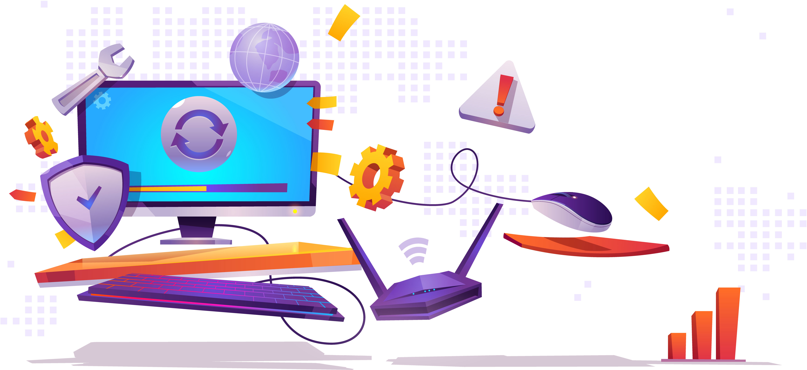

Velkommen.
Hos uSec mener vi at alle skal kunne færdes trygt på internettet og bruge deres digitale enheder uden bekymring.
Mange virksomheder og større foreninger er begyndt at blive opmærksom på den stigende trussel, som cyberkriminalitet udgør, og gør mange tiltag for at sikre sig imod netop det.
Desværre er den almindelige dansker, i rigtig mange tilfælde, slet ikke klar over hvor stor en trussel dette er, og hvor stor skade det kan gøre. Også for privatpersoner.
Det kan være meget traumatiserende at få sin online identitet stjålet, og have andre udgive sig for at være én selv. Eller have andre købe ind via internettet med dine kreditkortoplysninger.
Hos Usec gør vi alt hvad vi kan, for at hjælpe den almindelige dansker med at sikre sig imod sådanne angreb. Desværre er et anti-virus program langt fra tilstrækkeligt, for at imødegå de trusler vi ser i dag. Det er nødvendigt at have kendskab til hvordan hackere opererer, deres metoder og veje ind i dit system. Selv med en smule viden, kan mange hackerangreb undgås. Derfor tilbyder vi overkommelige kurser til private og mindre organisationer, som ønsker at blive bedre udrustet, til at imødegå de digitale trusler vi alle står overfor.
Vær opmærksom!
Under koronakrisen har der været et stigende antal svindlere som benytter sig af falske emails og apps. Beskeder fra det offentlige vil altid komme i din e-boks, så stol aldrig på mails i andre indbokse hvis du ikke selv har bestilt dem!Sikkerhedsinfo
"90% of attacked devices are routers and connected cameras. When looking for a point of entry, the cybersecurity statistics for 2020 point out that hackers are most likely to choose either a router or IoT devices, such as cameras. Leaving the stock security settings on either of those is a bad practice. " - Symantec
Langt de fleste enheder som hackere bruger til at tiltvinge sig adgang til andres netværk og dermed computere er routere og forbundne kameraer eller lignende enheder. Ved at være opmærksom på dette og holde disse enheder opdaterede, samt jævnligt at skifte adgangskode på routeren, kan disse angreb i høj grad modvirkes. Hos uSec kan vi hjælpe dig med netop dette, og mere til.
"69% of organizations don’t believe the threats they’re seeing can be blocked by their anti-virus software." - Ponemon Institute
Anti-virus programmer er gode og stærkt anbefalede, men er i sig selv ikke nok til at holde dig sikker mod alle former for angreb. Det er også vigtigt selv at vide hvordan man kan forhindre yderligere angreb, samt at vide hvordan man skal gebærde sig for ikke at falde i en fælde.
"43% of data breaches are cloud based web applications; 70% of breaches are caused by external actors" - Fintech News
Uanset hvor meget man har styr på sin egen sikkerhed, så kan online tjenester du har benyttet (og dermed lagret information om dig selv på) altid udsættes for angreb, i et forsøg på at erhverve sig disse informationer. Derfor er det vigtigt at være opmærksom på hvad du lægger ud på disse tjenester, og eventuelt deres forrige sikkerhedshistorie.
Statistikker
I forbindelse med koronakrisen er risikoen for virus steget kraftigt - Både fysisk og online. I den sammenhæng har vi samlet de nyeste statistikker, der viser omfanget af truslen. Mange af disse trusler kan dog undgås med kløgt og oplysning, som vi tilbyder her hos uSec.
- Coronavirus blamed for 238% rise in attacks on banks
- 80% of firms have seen an increase in cyberattacks
- 27% of attacks target banks or healthcare
- Cloud based attacks rose 630% between January and April 2020
- Phishing attempts rose 600% since end of February
- Apple accounted for 10% of branded phishing attempts in Q1 2020
- Ransomware attacks rose 148% in March
- 394,000 unique IP addresses attacked UK firms in Q1
- Attacks targeting home workers rose five-fold in six weeks since lockdown
- Attacks were up 30% in Q1 2020 on UK businesses
- 5% of coronavirus-related domains deemed suspicious
- Visits to hacker websites and forums rose 66% in March
- Average ransomware payment rose 33% to $111,605, compared to Q4 2019
- EventBot, identified in March, has targeted 200 banking and money transfer apps
Coronavirus cyberattack stats
- 85% of people posting puppy photos are trying to scam you
- 43% of data breaches are cloud based web applications
- 67% of data breaches resulted from credential theft, human error or social attacks.
- Fewer than 1 in 20 breaches exploit weaknesses
- 70% of breaches are caused by external actors
- Organized crime gangs account for 55% of attacks
- 37% of credential theft breaches used stolen or weak credentials
- 25% involved phishing
- Human error accounts for 22%
- Ransomware is found in 27% of malware incidents – up from 24% in 2019
- 18% of organizations reported a ransomware attack
- 41% of customers would stop buying from a business victim of a ransomware attack
- 9 million EasyJet customers had their data hacked
- Hacker leaks 40 million user records from Wishbone app
- There is a cyberattack every 39 seconds
- 75% of cyberattacks start with an email
- 21% of online users are victims of hacking
- 11% of online users have been victims of data theft
- 72% of breaches target large firms
- 10% of organizations receive cryptocurrency mining malware
- 80% of hacking breaches involve brute force or stolen credentials
Cybersecurity data for 2020
Kurser
Hos uSec går vi op i kontakt og kundernes specifikke behov, derfor tilbyder vi en række kurser til bedst at opfylde de behov du har. Alle vores kurser indebærer som udgangspunkt et besøg af en af vores sikkerhedseksperter, da vi værdsætter
den personlige kontakt, men grundet de nuværende vilkår med COVID-19 kan vi også tilbyde kurser over nettet. Ved besøg vil vi naturligvis følge regeringens retningslinjer for at undgå smittespredning.
Du er naturligvis velkommen til at kontakte os via telefon eller email hvis du har spørgsmål til kurserne eller andet omkring os.
Introduktionskursus
Er du i tvivl om hvor du skal starte? Så er det måske her det er. I vores introkursus giver vi et indblik i cyberkriminalitetens verden, hvordan hackerne opererer, og de grundlæggende måder hvorved du kan holde dig sikker.
Pris: 399 kr.
Varighed: ca. 1 time
Personligt kursus
Et kursus som er skræddersyet til dig og dine behov. Omend du er Apple-entusiast med hele huset forbundet eller bare bruger Windows til at tjekke Facebook en gang om ugen, så kan vi hjælpe dig med din sikkerhed.
Pris: 800 kr. pr. time
Varighed: 1-3 timer pr. kursusdag
Holdkurser
Vi tilbyder også holdundervisning til eksempelvis foreninger og virksomheder, hvor flere har samme behov og vilkår, og kunne gavne af at lære det hele i samlet flok. Det behøver selvfølgelig ikke at være en etableret forretning, hvis bare
I er en gruppe kan det lade sig gøre.
Pris: 1000 kr. + 150 kr. pr. person, pr. time
Varighed: 1-4 timer
Børn og unge
Børn og unge er nogen af dem der tilbringer mest tid online og har hyppigst omgang med fremmede på nettet, og er derfor særligt udsatte for svindel, især de yngste med mindre erfaring. Derfor udbyder vi et kursus særligt rettet mod denne
aldersgruppe; det kan med fordel benyttes af skoler, fritidshjem eller bare forældre som vil gøre noget ekstra for deres børns sikkerhed.
Kurset er primært rettet mod aldersgruppen 8-16 år.
Pris: 500 kr. + 100 kr. pr. barn
Varighed: Ca. 1 time
Kontakt
Har du spørgsmål? Er du interesseret, men vil vide mere? Der kan være mange grunde til at ønske kontakt, og i så fald kan du nå os på email og telefon:
Email: anders@usec.dk
Telefon: 87 36 28 46
Åbningstider: Mandag-fredag kl. 9-16
Ellers kan du komme i kontakt med os via nedenstående kontaktformular.